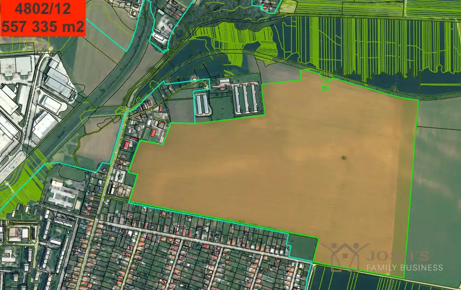

Aktuálna ponuka
5 nehnuteľností, predovšetkým byty, pozemky, rodinné domy. Každá má vlastnú stránku s fotkami, popisom a mapou.
Prezrieť ponukuJozef KotekRealitný maklér
Realitný maklér · Josh's Family Business
Predaj a prenájom nehnuteľností · Miloslavov, Bratislava, Slovenský Grob

 BytNové10
212 000 €Dokonalý 2-izbový byt
Miloslavov
2-izbový57.49 m²1. podlažie
Ponúkame na predaj byt, ktorý je kompletne domyslený do posledného detialu majiteľkou.Posunuté priečky ešte vo fáze výstavby, aby byt pôsobil vzdušný…
BytNové10
350 000 €Jedinečná ponuka bývať u Pálffyho
Rača, Bratislava
3-izbový67 m²2. podlažie
Jedinečná a jediná PONUKA bývať v "starej Rači".Byt je priestranný, svetlý a kompletne zariadený 3-izbový byt vo vyhľadávanej časti…
PozemokNové10
Cena dohodouEXKLUZÍVNE NA PREDAJ – Investičné stavebné pozemky vo Vrábľoch, pri Nitre
Nitra
650000 m²
Ponúkam na predaj výnimočný developerský celok v meste Vráble, ktoré sa nachádza len 20 minút od Nitry. Lokalita sa dynamicky rozvíja a má vysoký…
BytNové10
212 000 €Dokonalý 2-izbový byt
Miloslavov
2-izbový57.49 m²1. podlažie
Ponúkame na predaj byt, ktorý je kompletne domyslený do posledného detialu majiteľkou.Posunuté priečky ešte vo fáze výstavby, aby byt pôsobil vzdušný…
BytNové10
350 000 €Jedinečná ponuka bývať u Pálffyho
Rača, Bratislava
3-izbový67 m²2. podlažie
Jedinečná a jediná PONUKA bývať v "starej Rači".Byt je priestranný, svetlý a kompletne zariadený 3-izbový byt vo vyhľadávanej časti…
PozemokNové10
Cena dohodouEXKLUZÍVNE NA PREDAJ – Investičné stavebné pozemky vo Vrábľoch, pri Nitre
Nitra
650000 m²
Ponúkam na predaj výnimočný developerský celok v meste Vráble, ktoré sa nachádza len 20 minút od Nitry. Lokalita sa dynamicky rozvíja a má vysoký…

Pozemok10 Cena dohodouEXKLUZÍVNE NA PREDAJ – Investičné stavebné pozemky vo Vrábľoch, pri Nitre Vráble 650000 m² Ponúkam na predaj výnimočný developerský celok v meste Vráble, ktoré sa nachádza len 20 minút od Nitry. Lokalita sa dynamicky rozvíja a má vysoký… DomRezervované10
Cena dohodouNa predaj novinka v malom raji
Slovenský Grob
84 m²
Ponúkame na predaj priestranný 4-izbový byt v dvojdome, v obľúbenej lokalite Malý Raj – Slovenský Grob.Nehnuteľnosť spája výhody bytu s komfortom…
DomRezervované10
Cena dohodouNa predaj novinka v malom raji
Slovenský Grob
84 m²
Ponúkame na predaj priestranný 4-izbový byt v dvojdome, v obľúbenej lokalite Malý Raj – Slovenský Grob.Nehnuteľnosť spája výhody bytu s komfortom…
Tomuto výberu zatiaľ nezodpovedá žiadna ponuka. Napíšte mi, čo hľadáte.
Volám sa Jozef Kotek. Som realitný maklér kancelárie Josh's Family Business a pôsobím predovšetkým v lokalitách Miloslavov, Bratislava, Slovenský Grob a Nitra (Bratislavský kraj).
5 nehnuteľností, predovšetkým byty, pozemky, rodinné domy. Každá má vlastnú stránku s fotkami, popisom a mapou.
Prezrieť ponukuMiloslavov, Bratislava, Slovenský Grob, Nitra, Vráble a okolie. Ponuku si môžete prezrieť podľa lokality.
Nehnuteľnosti v lokaliteOdhad trhovej ceny, príprava prezentácie, obhliadky, zmluvy a odovzdanie nehnuteľnosti.
Dohodnúť stretnutieKaždý špendlík je jedna nehnuteľnosť z mojej ponuky. Kliknite a pozrite sa.
© prispievatelia OpenStreetMap
Na čo sa pýtate najčastejšie, skôr než sa stretneme.
Odhad trhovej ceny vychádza z aktuálnych ponúk a predajov v lokalite, nie z cenníkových tabuliek. Podmienky Vám poviem pri prvom telefonáte.
Najprv obhliadka a odhad ceny, potom príprava prezentácie (fotografie, popis, inzercia), obhliadky so záujemcami, rezervačná zmluva, kúpna zmluva, návrh na vklad do katastra a odovzdanie nehnuteľnosti. O každom kroku viete vopred.
Najrýchlejšie cez WhatsApp alebo telefón. Termín stretnutia alebo obhliadky dohodneme podľa Vás.